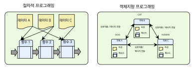
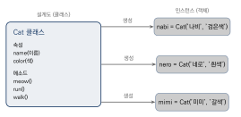
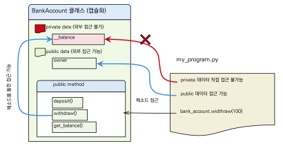
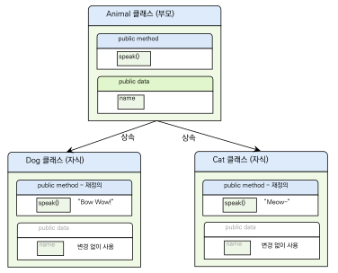

클래스와 객체
이 장을 마치면
- 클래스를 정의하고
__init__()으로 인스턴스를 초기화할 수 있다. - 속성(데이터)과 메소드(동작)의 차이를 이해하고 활용할 수 있다.
- 캡슐화로 내부 상태를 보호할 수 있다.
- 상속으로 기존 클래스를 확장하고 재사용할 수 있다.
- 절차적 프로그래밍과 객체지향 프로그래밍의 차이를 설명할 수 있다.
지금까지 우리는 문제의 해결 절차를 함수 단위로 나누어 호출하는 방식으로 프로그래밍을 해 왔다. 이러한 방식을 절차적 프로그래밍procedural programming이라 한다. 하지만 소프트웨어의 규모가 커지면 수천 개의 함수를 관리해야 하므로, 관련된 데이터와 기능을 하나로 묶어 관리하는 새로운 접근이 필요해진다. 이것이 바로 객체 지향 프로그래밍object oriented programming, OOP이다.
쉬운 비유를 들어 보자. 클래스는 붕어빵 틀이고, 객체는 그 틀로 만든 실제 붕어빵이다. 틀(클래스) 하나만 있으면 팥 붕어빵, 슈크림 붕어빵 등 다양한 붕어빵(객체)을 찍어낼 수 있다. 형태는 같지만 안에 들어가는 재료(속성)는 서로 다를 수 있다. 사실 우리가 앞서 사용한 리스트, 딕셔너리, 문자열도 모두 클래스의 인스턴스(객체)이다. 이 장에서는 직접 클래스를 설계하고 객체를 만들어 보면서 객체 지향 프로그래밍의 핵심 개념을 익혀 보자.
9.1 객체 지향 프로그래밍과 객체
절차적 프로그래밍과 객체 지향 프로그래밍
지금까지 배운 프로그래밍 방식은 문제의 해결 절차를 순서대로 기술하는
절차적 프로그래밍procedural programming이었다.
함수를 만들어 필요할 때 호출하는 방식으로 문제를 해결하였다.
예를 들어, add(a, b)와 같은 함수 블록이 있을 경우 사용자는 필요할 경우
add(100, 200)과 같은 방식으로 함수를 호출해서 전체 문제를 해결할 수 있을 것이다.
이러한 함수 블록이 많지 않고 호출도 제한적이라면 절차적 방법으로 문제를 해결할 수 있겠지만,
오늘날 프로그램은 수만 라인에서 수십만 라인 이상의 복잡한 코딩이 필요한 경우가 많다.
객체 지향 프로그래밍object oriented programming, OOP은 우리가 프로그램을 짤 때 프로그램을 실제 세상에 가깝게 모델링하는 기법이다. 즉, 컴퓨터가 수행하는 작업을 객체들 사이의 상호 작용으로 표현하는 것이다. 이를 위해 클래스class와 객체object들의 집합으로 소프트웨어를 개발하는 것이다.
예를 들어 게임을 상상해 보자. 게임 공간 상에는 자동차, 건물, 지형, 총과 이것을 활용하는 게임 플레이어가 있다. 게임이 시작되고 게임 공간에 건물이 있다면 게임 플레이어는 이를 활용해서 적을 피하거나 내부에 숨는 행위를 할 것이다. 혹은 자동차를 이용해서 적절한 지형을 돌아다니기도 한다. 이렇게 게임 캐릭터와 건물, 자동차, 지형을 피하거나 이동하는 등과 같은 상호작용interaction을 할 수 있다.
절차적 프로그래밍과 객체 지향 프로그래밍의 방법론을 비교해 보면, 절차적 프로그래밍 방식의 경우 데이터들이 많아지고 함수가 많아지면 매우 많은 화살표와 함수 호출이 필요하기 때문에 대규모 프로젝트에서는 큰 어려움을 겪을 수 있다. 반면, 소프트웨어를 개발할 때 개발자는 각각의 요소들을 객체화시키고 이 객체들이 다른 객체들과 상호작용하는 방식으로 개발하면 매우 편리하다. 이를 위해 객체 지향 프로그래밍은 잘 설계된 클래스를 이용하여 객체를 만든다. 이때 클래스는 속성과 행위를 가지도록 설계하고 이 클래스를 이용하여 실제로 상호작용하는 객체를 만들어서 프로그램에 적용시키는 방법을 사용한다.
특히, 절차적 프로그래밍 방식은 그래픽 사용자 인터페이스graphical user interface 시스템과 같이 다양한 그래픽 요소들이 있을 경우 효과적으로 문제를 해결하기 힘들다. 그 이유는 그래픽 기반의 사용자 인터페이스에서 사용자들이 정해진 절차와 순서에 맞게 라디오 버튼, 체크박스, 텍스트 필드나 탭을 선택하지 않기 때문이다. 또한, 운영체제와 같은 큰 시스템의 경우에도 절차적인 방식으로 효과적으로 사용자의 입력이나 요구에 대응하기 어렵다.

그림 9.1은 절차적 프로그래밍과 객체 지향 프로그래밍의 구조적 차이를 보여 준다. 절차적 프로그래밍은 데이터와 함수가 분리되어 복잡한 연결이 필요하지만, 객체 지향 프로그래밍은 관련된 데이터와 기능을 하나의 객체로 묶어 상호작용하는 구조이다.
두 방식 모두 프로그래밍의 규모가 커진다면 모두 어렵기는 마찬가지일 것이다. 그러나 객체 지향 프로그래밍 방식이 개발이나 소프트웨어 업데이트 시의 유지보수 비용이 매우 적게 들기 때문에 최근 프로그래밍 언어는 객체 지향 방식을 선호한다.
객체란 무엇인가
객체object란 프로그램 상에서 사용되는 속성attribute과 동작behavior을 모아 놓은 집합체라고도 할 수 있다. 속성은 객체가 가진 데이터이고, 동작(행위)은 메소드method라고 부른다.
사실 파이썬에서 사용되는 모든 데이터는 객체이다.
앞에서 배운 리스트, 문자열, 정수, 딕셔너리 등이 모두 객체이며,
각각 고유한 메소드를 가지고 있다.
파이썬의 리스트list라고 하는 클래스는 "lion", "tiger", "cat", "dog" 등의
문자열 요소를 속성으로 가질 수 있으며, sort(), append(), remove(),
reverse(), pop() 등의 풍부한 메소드를 이미 잘 만들어 두었다는 것을 알 수 있다.
이렇게 파이썬에서는 다양한 기능을 수행하도록 만들어진 많은 실체들이 있으며,
속성과 메소드를 가진 실체를 소프트웨어에서 객체라고 한다.
animals = ['lion', 'tiger', 'cat', 'dog']
animals.sort() # 리스트 객체의 sort() 메소드
animals.append('rabbit') # 리스트 객체의 append() 메소드
print(animals)
# ['cat', 'dog', 'lion', 'tiger', 'rabbit']
s = 'tiger'
print(s.upper()) # 문자열 객체의 upper() 메소드 -- 'TIGER'
print(s.find('g')) # 문자열 객체의 find() 메소드 -- 2위의 실습 코드에 있는 animals라는 리스트에는 "lion", "tiger", "cat", "dog" 요소들이 있다.
우리는 이 리스트에 animals.sort()와 같은 방식으로 sort() 메소드를 호출하여
리스트의 요소를 알파벳순으로 정렬할 수 있다.
우리는 정렬을 위한 함수를 별도로 만들어 주지 않았지만, 위의 코드는 잘 작동한다.
그 이유는 무엇일까?
위의 코드를 살펴보면 파이썬의 리스트라고 하는 클래스는
문자열 요소를 속성으로 가질 수 있으며, sort(), append(), remove(),
reverse(), pop() 등의 풍부한 메소드를 이미 잘 만들어 두었다는 것을 알 수 있다.
또한, 문자열이라는 클래스는 문자와 관련된 다양한 처리 기능이 미리 잘 정의되어 있다.
프로그래머는 이러한 클래스를 이용하여 객체를 생성한 후, 이 객체의 기능을 호출하고 조합하여
문제를 쉽게 해결할 수 있다.
type()과 id() 함수
이제 객체의 타입과 아이디를 type()과 id()라고 하는 함수를 통해 다시 한 번 알아보자.
파이썬에서 type()은 객체의 자료형을 알려주는 함수이다.
앞서 살펴본 animals 리스트에 대하여 type(animals)를 통해
animals 객체가 리스트 클래스 자료형이라는 것을 알 수 있다.
또한 id(animals)를 통해서 파이썬 객체의 정수 값 아이디를 얻을 수 있다.
파이썬 프로그래밍을 하다 보면 많은 객체를 사용하게 되는데
이 객체들은 생성될 때 서로 다른 고유의 아이디 값을 가진다.
animals = ['lion', 'tiger', 'cat', 'dog']
print(type(animals)) # <class 'list'>
print(id(animals)) # 24990662 (고유한 아이디)
s = 'tiger'
print(type(s)) # <class 'str'>
print(id(s)) # 83596600
n = 200
print(type(n)) # <class 'int'>
print(id(n)) # 24990565위의 결과에서 알 수 있듯이 리스트는 list 클래스, 문자열은 str 클래스,
정수는 int 클래스의 객체이다.
그렇다면 다음과 같은 정수는 어떤 type과 id를 가질까?
n = 200
print(type(n)) # <class 'int'>
print(id(n)) # 24990565
print(n + 100) # 300
print(n.__add__(100)) # 300 (n + 100과 동일)
print(200 + 100) # 300
print((200).__add__(100)) # 300 (200 + 100과 동일)위의 코드에서 살펴본 바와 같이 우리가 앞서 살펴본 정수라고 하는 자료형도 type(n)으로
확인해 보면 실제로는 int 클래스 형의 객체라는 것을 알 수 있다.
우리가 정수 연산을 실행하기 위하여 n + 100 혹은 200 + 100과 같은
더하기(+) 연산자를 이용했는데,
위의 예제에서 확인한 바와 같이 이 연산은 실제로는 n.__add__(100)이나
(200).__add__(100)과 같이
int 형 객체와 __add__() 메소드의 호출로 구현되어 있다.
int 클래스는 __add__() 메소드뿐만 아니라
__sub__(), __mul__(), __truediv__()와 같은 많은 메소드를 가지는데
이 메소드를 이용하여 우리는 정수 값의 다양한 산술 연산을 할 수 있다.
파이썬은 객체 지향 프로그래밍 언어로, 사용되는 데이터는 모두 객체이다.
정수 100, 문자열 'tiger', 리스트 [1, 2, 3] 모두 각각의 클래스에서 만들어진 객체이며
고유한 type과 id를 가진다.
다음과 같은 수식과 연산에 사용되는 n이나 100, 200은 객체일까?
n = 100 + 200이라는 코드는 위의 코드에서처럼 (100).__add__(200)이라는
메소드 호출과 동일하다.
즉, 위의 코드에서 100이라는 정수 객체는 __add__() 메소드를 이용해서
200이라는 객체를 더하는 일을 한다.
이런 점에서 더하기(+) 연산자 역시 본질적으로 animals.append('rabbit')이라는
메소드 호출 코드와 수행 절차가 동일하다.
따라서 100과 200도 객체이다.
객체 지향 프로그래밍은 속성과 메소드를 가진 객체들의 상호 작용으로 프로그램을 구성하는 기법이다.
파이썬의 모든 데이터(정수, 문자열, 리스트 등)는 객체이며, type()과 id()로 확인할 수 있다.
절차적 프로그래밍에 비해 객체 지향 프로그래밍은 대규모 소프트웨어 개발과 유지보수에 유리하다.
9.2 클래스 정의와 객체 생성
클래스와 인스턴스
클래스class는 객체를 만들기 위한 설계도 또는 청사진blueprint이다. 클래스 안에는 속성(데이터)과 메소드(동작)가 정의되어 있다. 인스턴스instance란 클래스로부터 만들어진 각각의 개별적인 객체를 말한다. 서로 다른 인스턴스는 서로 다른 속성을 가질 수 있다.
앞서 비유한 것처럼, 클래스가 붕어빵 틀이라면 인스턴스는 그 틀로 실제로 만들어진 붕어빵이다. 또 다른 비유를 들면, "고양이"라는 개념(클래스)이 있고, 실제로 존재하는 "나비"라는 이름의 검은색 고양이(인스턴스)와 "네로"라는 이름의 흰색 고양이(인스턴스)가 있는 것이다. 모든 고양이는 이름과 색상이라는 속성을 가지고, 야옹하기, 달리기, 걷기 등의 동작을 할 수 있다. 하지만 각 고양이의 이름과 색상은 서로 다르다.

위 그림에서 왼쪽의 설계도면이 클래스에 해당한다.
클래스는 name, color라는 속성, meow(), run(), walk()라는
메소드가 정의되어 있지만, 아직 구체적인 값은 없다.
오른쪽의 인스턴스들은 이 설계도에 따라 이름과 색을 가진 구체적인 고양이를 나타낸다.
많은 책에서 객체와 인스턴스를 비슷한 개념으로 섞어서 사용한다.
두 용어는 매우 비슷해서 구분하지 않는 경우도 많지만, 조금 더 엄밀하게 정의하자면
객체는 어떤 행위의 대상이 될 수 있는 모든 사물이며,
인스턴스는 클래스라는 추상적 틀에 근거해 만들어진 사물로 정의해서 사용한다.
예를 들어, 이 책에서 정의한 Cat이라는 틀은 클래스이며,
이 Cat이라는 클래스에 의해서 만들어진 사물 nabi는 "객체"이면서 동시에
"Cat 클래스의 인스턴스"라고 이야기할 수 있다.
정리하자면 다음과 같은 표현이다.
1) 파이썬의 모든 객체는 자료형을 가진다.
2) 파이썬의 인스턴스는 클래스로부터 만들어진다.
3) 파이썬의 객체는 클래스로부터 만들어진다.
4) 파이썬의 클래스는 객체이다.
5) nabi는 객체이다.
6) nabi는 Cat 클래스의 인스턴스이다.
7) 100은 int 형 객체이다.
class 키워드로 클래스 정의
우선 본격적으로 클래스는 어떻게 정의하는지 파이썬 문법을 통해서 살펴보자.
클래스를 정의할 때는 class 키워드를 사용한다.
class ClassName:
<statement-1>
...
<statement-n>클래스를 정의하기 위해서는 위의 상자에 나타난 바와 같이 class라는 키워드를 쓴 후
class의 이름을 써준다.
그 후 필요한 속성과 메소드를 파이썬 문법에 맞게 써준다.
우선 다음과 같은 간단한 Cat 클래스를 정의하고 그 인스턴스를 생성해 보자.
class Cat: # Cat 클래스 정의
pass # 추후 코드를 위한 자리 표시자
nabi = Cat() # Cat 클래스의 인스턴스 생성
print(nabi) # <__main__.Cat object at 0x7f78399e0eb8>
print(type(nabi)) # <class '__main__.Cat'>이 코드에서 pass 문은 아무런 역할을 하지 않는 파이썬 명령문으로
다른 코드가 추후에 나타날 것을 대비한 플레이스홀더 역할을 한다.
비록 아무런 역할을 하지는 않으나 이 문장이 없을 경우 전체 코드는 수행되지 않는다는 것도 유의하도록 하자.
함수를 정의할 때 def를 사용하는 것과 마찬가지로 클래스를 정의할 때는
class라는 키워드를 사용하며, 이 키워드 다음에 클래스의 이름 Cat과 콜론을 넣어준다.
그리고 들여쓰기 블록에 코드를 넣어주면 된다.
이와 같이 클래스를 정의한 후 nabi = Cat()와 같은 문법으로 Cat 클래스의 인스턴스 nabi를
생성할 수 있다.
메소드 추가
이제 Cat 클래스의 기능에 meow()라는 메소드를 추가해 보도록 하자.
클래스에 메소드를 추가하려면 클래스 내부에서 def 문을 사용한다.
메소드의 첫 번째 매개변수는 반드시 self여야 한다.
self는 해당 인스턴스 자신을 가리키는 변수이다.
class Cat:
def meow(self): # Cat 클래스의 메소드
print('Meow meow~~~')
nabi = Cat()
nabi.meow() # Meow meow~~~Meow meow\textasciitilde\textasciitilde\textasciitilde
실제로 여러분이 Cat이라는 단순한 클래스를 만들어 사용하는 일은 거의 없겠지만,
개념을 익히기 위한 예제 코드로 이와 같은 간단한 클래스와 인스턴스를 만들어서 설명할 것이다.
이 프로그램에서는 Cat이라는 이름의 클래스의 내부에 def 문을 이용하여
meow(self)라는 함수를 만들었는데 이 함수는 "Meow meow~~~"을 출력하는 아주 단순한 일을 한다.
이와 같이 클래스 내부에서 정의되어 클래스나 클래스 인스턴스가 사용하는 함수를
메소드method 혹은 멤버함수member function라고 한다.
meow() 메소드의 매개변수인 self는 자기 자신을 참조하는 변수이며,
메소드의 첫 번째 매개변수로 반드시 들어가야 한다.
이제 클래스의 외부에서 Cat()이라는 구문을 통해 인스턴스를 생성하고
nabi라고 하는 인스턴스를 참조하는 변수를 만들어 준다.
이때도 클래스 이름 Cat 뒤에 괄호를 반드시 넣어야만 인스턴스가 생성된다.
인스턴스의 메소드를 호출하는 문법은 인스턴스이름.메소드이름()과 같이 점(.) 연산자를 사용한다.
만약에 여러 마리의 고양이 객체를 만들고 nabi, nero, mimi와 같은 변수로 참조하여
메소드를 호출하고 싶다면 다음과 같은 방법을 사용하면 된다.
class Cat:
def meow(self):
print('Meow meow~~~')
nabi = Cat()
nabi.meow() # Meow meow~~~
nero = Cat()
nero.meow() # Meow meow~~~
mimi = Cat()
mimi.meow() # Meow meow~~~Meow meow\textasciitilde\textasciitilde\textasciitilde Meow meow\textasciitilde\textasciitilde\textasciitilde Meow meow\textasciitilde\textasciitilde\textasciitilde
이 코드는 3개의 고양이 인스턴스를 생성하였으며, nabi, nero, mimi의 이름으로
이를 참조하고 있다.
그리고 각 인스턴스가 모두 Cat 클래스의 메소드를 호출하여 사용할 수 있음을 보여준다.
이를 통해 각각의 인스턴스들이 동일한 meow() 메소드를 공유한다는 것도 알 수 있다.
__init__ 생성자와 인스턴스 변수
이제 이 인스턴스들이 공유하지 않는 개별적인 이름과 색상 정보를 부여하려면 어떻게 해야 할까?
즉, nabi라는 고양이 인스턴스는 "나비"라는 이름을, nero라는 고양이 인스턴스는
"네로"를 각각 가지고, mimi라는 고양이 인스턴스는 "미미"라는 이름을 가지고 모든 고양이들이
각각 다른 색상을 가지도록 하고자 한다.
이때 사용하는 것이 __init__()이라는 초기화 메소드initialization method이다.
이 메소드는 인스턴스가 생성될 때 자동으로 호출되기 때문에 생성자constructor라고도 부른다.
이 메소드에 각각의 인스턴스가 생성될 때 해야 할 기능을 다음과 같이 구현해 주면 모든 인스턴스들이 서로 다른 인스턴스 변수instance variable를 가지게 된다.
class Cat:
# 생성자 -- 인스턴스가 생성될 때 자동으로 호출됨
def __init__(self, name, color):
self.name = name # 인스턴스 변수
self.color = color # 인스턴스 변수
def meow(self):
print(f'My name is {self.name}, color is {self.color}, meow~~')
nabi = Cat('Nabi', 'black') # nabi 인스턴스
nero = Cat('Nero', 'white') # nero 인스턴스
mimi = Cat('Mimi', 'brown') # mimi 인스턴스
nabi.meow() # My name is Nabi, color is black, meow~~
nero.meow() # My name is Nero, color is white, meow~~
mimi.meow() # My name is Mimi, color is brown, meow~~My name is Nabi, color is black, meow\textasciitilde\textasciitilde My name is Nero, color is white, meow\textasciitilde\textasciitilde My name is Mimi, color is brown, meow\textasciitilde\textasciitilde
이 프로그램의 __init__() 메소드는 self, name, color를 매개변수로 받는다.
이 메소드의 첫 번째 매개변수 self는 클래스의 인스턴스를 지칭한다.
두 번째 매개변수 name과 세 번째 매개변수 color는 인스턴스의 속성에 해당하는
이름과 색상을 할당하기 위한 변수이다.
nabi라는 인스턴스는 "Nabi"라는 이름과 "black"이라는 인자를 받으며,
self.name = name과 self.color = color라는 문장을 통해
각각 인스턴스 변수의 name과 color에 인자로 들어온 값을 할당한다.
여기서 self.name과 self.color는 각각의 인스턴스가 가지는 속성에 해당하는데
이와 같이 각각의 인스턴스들이 개별적으로 가지는 속성을 저장하는 변수를
인스턴스 변수instance variable, 멤버변수member variable
혹은 필드field라고 한다.
반면 self.name = name의 오른쪽에 있는 name은 인자를 통해서 전달받은 값을 의미한다.
self는 메소드가 호출된 인스턴스 자신을 가리키므로,
nabi에서는 self가 nabi를, nero에서는 self가 nero를 의미한다.
마찬가지로 self는 mimi 인스턴스에서는 mimi를 가리키게 된다.
메소드를 정의할 때 첫 번째 매개변수 self를 빠뜨리면 오류가 발생한다.
self는 파이썬이 인스턴스를 자동으로 전달하는 매개변수이므로 반드시 포함해야 한다.
단, 메소드를 호출할 때는 self에 해당하는 인자를 직접 전달하지 않는다.
예를 들어 nabi.meow()라고 호출하면 파이썬이 자동으로 nabi를 self로 전달한다.
실생활 예제 — Student 클래스
학생 정보를 관리하는 Student 클래스를 만들어 보자.
이 예제를 통해 생성자, 인스턴스 변수, 메소드의 개념을 종합적으로 이해할 수 있다.
class Student:
def __init__(self, name, student_id, major):
self.name = name
self.student_id = student_id
self.major = major
self.scores = []
def add_score(self, score):
self.scores.append(score)
def average(self):
if len(self.scores) == 0:
return 0
return sum(self.scores) / len(self.scores)
def info(self):
avg = self.average()
print(f'{self.name}({self.student_id}) - {self.major}, avg: {avg:.1f}')
# 학생 객체를 생성하고 사용
s1 = Student('Hong Gildong', '2026001', 'Computer Science')
s1.add_score(85)
s1.add_score(92)
s1.add_score(78)
s1.info() # Hong Gildong(2026001) - Computer Science, avg: 85.0
s2 = Student('Kim Younghee', '2026002', 'Business')
s2.add_score(95)
s2.add_score(88)
s2.info() # Kim Younghee(2026002) - Business, avg: 91.5이 예제에서 Student 클래스는 학생의 이름, 학번, 전공을 생성자에서 초기화하고,
빈 리스트 scores를 만들어 둔다.
add_score() 메소드로 성적을 추가하고, average() 메소드로 평균을 계산하며,
info() 메소드로 학생 정보를 출력한다.
이처럼 관련된 데이터와 기능을 하나의 클래스로 묶으면 코드가 체계적으로 정리되고
재사용하기도 쉬워진다.
파이썬은 클래스에 대해 하나의 생성자만을 허용한다.
C++나 Java와 같은 프로그래밍 언어는 여러 가지 형태의 생성자를 허용하고
이 때는 클래스의 이름을 중복 정의하여 사용할 수 있다.
이 때문에 위에서 만든 __init__() 메소드의 생성자 매개변수에
(self, name, color = 'white')와 같이
color = 'white' 형식의 디폴트 매개변수를 넣어주면,
Cat('Nero')와 Cat('Nero', 'white')을 모두 사용할 수 있다.
class 키워드로 클래스를 정의하고, __init__()으로 인스턴스 변수를 초기화한다.
self는 인스턴스 자신을 가리키는 매개변수로, 메소드의 첫 번째 인자로 반드시 포함해야 한다.
클래스는 설계도이고, 인스턴스는 그 설계도로 만든 실제 객체이다.
9.3 클래스 변수와 캡슐화
이번 절에서는 클래스를 더 깊이 이해하기 위해 클래스 변수, 캡슐화, 특수 메소드, 상속에 대해 알아본다. 이 개념들은 객체 지향 프로그래밍의 핵심 원리이며, 이를 잘 활용하면 더 안전하고 유지보수하기 쉬운 프로그램을 작성할 수 있다.
클래스 변수 vs 인스턴스 변수
앞 절에서 배운 인스턴스 변수는 각 인스턴스마다 독립적으로 가지는 변수이며,
self를 통해 접근한다.
반면 클래스 변수class variable는 모든 인스턴스가 공유하는 변수이다.
비유를 들면, 인스턴스 변수는 각 학생이 개별적으로 가지는 "이름"이나 "학번"과 같고,
클래스 변수는 "현재까지 등록한 총 학생 수"와 같이 모든 학생이 함께 공유하는 정보에 해당한다.
인스턴스 변수는 self.변수이름으로, 클래스 변수는 클래스이름.변수이름으로 접근한다.
class Dog:
count = 0 # 클래스 변수 -- 모든 인스턴스가 공유
def __init__(self, name):
self.name = name # 인스턴스 변수 -- 인스턴스마다 고유
Dog.count += 1 # 객체가 생성될 때마다 1씩 증가
def bark(self):
print(f'{self.name}: Woof woof~~!!')
d1 = Dog('Baduk')
d2 = Dog('Choco')
d3 = Dog('Jindol')
print(f'Number of dogs created: {Dog.count}') # 3
d1.bark() # Baduk: Woof woof~~!!
d2.bark() # Choco: Woof woof~~!!Number of dogs created: 3 Baduk: Woof woof\textasciitilde\textasciitilde!! Choco: Woof woof\textasciitilde\textasciitilde!!
Dog.count는 클래스 변수로, 모든 Dog 인스턴스가 공유한다.
새로운 인스턴스가 생성될 때마다 __init__()에서 count가 1씩 증가하여
전체 객체 수를 추적할 수 있다.
반면 self.name은 인스턴스 변수로, d1은 "Baduk", d2는 "Choco",
d3는 "Jindol"이라는 서로 다른 값을 가진다.
캡슐화
캡슐화encapsulation란 객체의 속성과 메소드를 하나로 묶고, 외부에서 직접 접근하지 못하도록 제한하는 것이다. 왜 이런 제한이 필요할까?
실생활의 예를 들어 보자. 은행 계좌의 잔액은 아무나 직접 변경할 수 없어야 한다. 반드시 입금이나 출금이라는 정해진 절차를 거쳐야 잔액이 변경되어야 한다. 만약 아무나 잔액을 직접 수정할 수 있다면 심각한 보안 문제가 발생할 것이다. 캡슐화는 이처럼 데이터를 보호하고, 정해진 방법으로만 접근하도록 제한하는 개념이다.
파이썬에서는 변수 이름 앞에 밑줄(_)을 붙여 접근을 제한한다.
_변수이름: 관례적으로 외부 접근을 자제하라는 의미 (접근은 가능)__변수이름: 파이썬이 이름을 변경하여 외부 접근을 어렵게 만듦
(이름 맹글링name mangling)

그림 9.3은 캡슐화의 핵심 개념을 보여 준다.
owner는 공개 속성으로 외부에서 직접 접근할 수 있지만,
__balance는 비공개 속성으로 외부에서 직접 접근이 제한된다.
대신 deposit(), withdraw(), get_balance()와 같은
메소드를 통해서만 잔액에 접근할 수 있다.
class BankAccount:
def __init__(self, owner, balance):
self.owner = owner
self.__balance = balance # 외부에서 직접 접근 제한
def deposit(self, amount):
if amount > 0:
self.__balance += amount
print(f'Deposited {amount}. Balance: {self.__balance}')
def withdraw(self, amount):
if 0 < amount <= self.__balance:
self.__balance -= amount
print(f'Withdrew {amount}. Balance: {self.__balance}')
else:
print('Insufficient balance.')
def get_balance(self):
return self.__balance
acc = BankAccount('Hong Gildong', 100000)
acc.deposit(50000) # Deposited 50000. Balance: 150000
acc.withdraw(30000) # Withdrew 30000. Balance: 120000
print(acc.get_balance()) # 120000
# acc.__balance # AttributeError! 직접 접근 불가Deposited 50000. Balance: 150000 Withdrew 30000. Balance: 120000 120000
위 예제에서 __balance는 외부에서 직접 접근할 수 없으며,
반드시 deposit(), withdraw(), get_balance() 메소드를 통해서만 접근해야 한다.
이렇게 하면 잔액이 임의로 변경되는 것을 방지할 수 있다.
deposit() 메소드는 금액이 0보다 큰 경우에만 입금을 허용하고,
withdraw() 메소드는 출금 금액이 잔액 이하인 경우에만 출금을 허용한다.
이러한 검증 로직이 메소드 안에 포함되어 있기 때문에 데이터의 무결성이 보장되는 것이다.
파이썬의 이름 맹글링(__변수이름)은 완벽한 접근 차단이 아니라 접근을 "어렵게" 만드는 것이다.
_클래스이름__변수이름 형태로 여전히 접근할 수 있다.
그러나 이러한 우회 접근은 프로그래밍 관례를 어기는 것이므로
특별한 이유가 없는 한 사용하지 말자.
__str__() 특수 메소드
__str__() 메소드를 정의하면 print() 함수로 객체를 출력할 때 보여줄 문자열을 지정할 수 있다.
앞에서 살펴본 __init__()과 마찬가지로 __str__()도
이름의 앞뒤에 밑줄 두 개가 붙는 특수 메소드special method이다.
특수 메소드는 파이썬이 특정 상황에서 자동으로 호출하는 메소드로,
__init__()은 객체가 생성될 때, __str__()은 객체를 문자열로 변환할 때 각각 호출된다.
class Cat:
def __init__(self, name, color):
self.name = name
self.color = color
def __str__(self):
return f'Cat({self.name}, {self.color})'
nabi = Cat('Nabi', 'black')
print(nabi) # Cat(Nabi, black)Cat(Nabi, black)
__str__()을 정의하지 않으면 print(nabi)는 <__main__.Cat object at 0x...>와 같이
읽기 어려운 정보를 출력한다.
__str__()을 정의하면 객체를 의미 있는 문자열로 표현할 수 있어 디버깅과 로그 출력에 매우 유용하다.
상속 기본 개념
상속inheritance이란 기존 클래스의 속성과 메소드를 물려받아 새로운 클래스를 만드는 기능이다. 기존 클래스를 부모 클래스parent class, 새로운 클래스를 자식 클래스child class라고 한다.
실생활의 비유로 설명하면, "동물" 클래스가 부모이고 "개"와 "고양이" 클래스가 자식이다. 모든 동물은 이름이라는 속성과 소리를 내는 동작을 가지지만, 개는 "멍멍", 고양이는 "야옹"이라는 서로 다른 소리를 낸다. 상속을 사용하면 공통 기능은 부모 클래스에 한 번만 정의하고, 자식 클래스에서는 다른 부분만 추가하거나 수정하면 된다. 이렇게 하면 코드의 중복을 크게 줄일 수 있다.
class Animal:
def __init__(self, name):
self.name = name
def speak(self):
print(f'{self.name} makes a sound.')
class Dog(Animal): # Animal 클래스를 상속
def speak(self): # 메소드 오버라이딩
print(f'{self.name}: Woof!')
class Cat(Animal): # Animal 클래스를 상속
def speak(self): # 메소드 오버라이딩
print(f'{self.name}: Meow~')
dog = Dog('Baduk')
cat = Cat('Nabi')
dog.speak() # Baduk: Woof!
cat.speak() # Nabi: Meow~Baduk: Woof! Nabi: Meow\textasciitilde

그림 9.4은 상속 관계를 시각적으로 보여 준다. Dog과 Cat 클래스는 Animal 클래스를 상속받아
name 속성과 __init__()을 물려받았다.
각 자식 클래스에서 speak() 메소드를 재정의(오버라이딩overriding)하여
동물마다 다른 소리를 출력하도록 하였다.
이처럼 상속은 코드를 효율적으로 재사용하면서도 각 클래스의 고유한 특성을 표현할 수 있게 해 준다.
파이썬은 내장 예외Built-in Exception을 많이 가지고 있다.
이 예외들은 클래스로 정의되어 있고 계층적 구조로 만들어져 있기 때문에
새로운 예외를 만들 때에는 Exception을 상속받아서 구현할 수 있다.
이처럼 내장 예외 역시 상속을 활용한 대표적인 사례이다.
데코레이터로 더 파이썬답게: @property와 @classmethod
함수 정의 위에 @로 시작하는 표시를 붙이면 그 함수의 동작 방식을 바꿀 수 있는데,
이를 데코레이터decorator라고 한다.
파이썬은 클래스 설계에서 자주 쓰이는 두 가지 데코레이터,
@property와 @classmethod를 표준으로 제공한다.
앞에서 다룬 캡슐화와 클래스 변수 개념을 한층 더 파이썬다운 모습으로 표현해 주는 도구들이다.
@property는 캡슐화된 비공개 속성을 외부에 깔끔히 노출할 때 쓴다.
앞 절에서 BankAccount의 잔액을 읽기 위해 get_balance()처럼
괄호가 붙은 메소드 호출을 사용했다. @property를 쓰면
같은 안전성을 유지하면서 일반 속성처럼 acc.balance로 접근할 수 있다.
class BankAccount:
def __init__(self, owner, balance):
self.owner = owner
self.__balance = balance
@property
def balance(self): # 속성처럼 사용됨
return self.__balance
@balance.setter
def balance(self, value): # 값을 대입할 때 호출됨
if value < 0:
print('Balance cannot be negative.')
return
self.__balance = value
acc = BankAccount('Hong Gildong', 100000)
print(acc.balance) # 100000 -- 괄호 없이 접근
acc.balance = 50000 # 세터가 실행되어 값을 검증
print(acc.balance) # 50000
acc.balance = -1000 # 세터가 거부100000 50000 Balance cannot be negative.
@property로 정의한 메소드는 acc.balance처럼 괄호 없이 읽힌다.
이어서 @balance.setter로 정의한 메소드는 acc.balance =...처럼
대입할 때 자동으로 호출되어 입력 값을 검증한다.
사용하는 쪽은 일반 속성처럼 보이지만 내부적으로는 검증 로직이 동작하기 때문에,
캡슐화의 안전성과 사용 편의를 동시에 얻을 수 있다.
@classmethod는 인스턴스가 아니라 클래스 자체에 묶이는 메소드를 정의한다.
첫 매개변수로 self 대신 cls를 받는데, cls는 그 메소드가 속한 클래스를 가리킨다.
가장 흔한 활용은 다양한 입력 형식에서 객체를 만드는
대안 생성자alternative constructor 패턴이다.
class Cat:
def __init__(self, name, age):
self.name = name
self.age = age
@classmethod
def from_string(cls, text): # 'Nabi,3' -> Cat('Nabi', 3)
name, age = text.split(',')
return cls(name, int(age))
c1 = Cat('Choco', 2) # 기본 생성자
c2 = Cat.from_string('Nabi,3') # 대안 생성자
print(c1.name, c1.age) # Choco 2
print(c2.name, c2.age) # Nabi 3Choco 2 Nabi 3
Cat.from_string('Nabi,3')은 인스턴스를 먼저 만들지 않고
클래스에서 직접 호출한다는 점에 주목하자.
cls는 클래스 자기 자신이므로 cls(name, int(age))는 사실상
Cat(name, int(age))과 같다.
이렇게 하면 문자열·딕셔너리·파일 등 여러 입력 형식에서 객체를 만드는 방법을
하나의 클래스 안에 일관된 이름으로 모아 둘 수 있다.
@classmethod와 짝을 이루는 @staticmethod는 self도 cls도
받지 않는 메소드를 정의한다. 클래스와 논리적으로 묶이지만 클래스나 인스턴스의 상태를
참조하지 않는 보조 함수를 클래스 안에 둘 때 쓴다.
세 데코레이터의 차이는 연습문제에서 직접 코드로 비교해 본다.
클래스 변수는 모든 인스턴스가 공유하고, 인스턴스 변수는 각 인스턴스가 독립적으로 가진다.
캡슐화는 데이터를 보호하고 정해진 메소드로만 접근하도록 제한하는 개념이며,
@property로 게터·세터를 속성처럼 표현할 수 있다.
__str__()로 객체의 문자열 표현을 지정할 수 있고,
@classmethod로는 cls를 받아 클래스에서 직접 호출하는 대안 생성자를 만들 수 있다.
상속을 이용하면 기존 클래스를 확장하여 새로운 클래스를 효율적으로 만들 수 있다.
9.4 상속의 활용 — super()와 다형성
앞 절 마지막에서 살펴본 Animal-Dog-Cat 예제는 상속의 가장 단순한 형태였다.
그러나 실제 프로그래밍에서는 부모 클래스의 초기화 로직을 재활용하면서 자식 클래스에 새로운 속성을 더하거나, 같은 메소드 호출이 객체 종류에 따라 서로 다른 결과를 내는 패턴이 훨씬 더 자주 등장한다.
이 절에서는 이 두 가지 핵심 활용 방식인 super()와 다형성polymorphism을 살펴본다.
super() — 부모 클래스의 기능 빌려 쓰기
자식 클래스에서 __init__()을 새로 정의하면, 부모의 __init__()은 더 이상 자동으로 호출되지 않는다.
부모가 초기화하던 속성도 함께 처리하려면 자식 클래스 안에서 super().__init__(\dots)을 호출하여 부모의 초기화 코드를 명시적으로 실행해 주어야 한다.
class Animal:
def __init__(self, name, age):
self.name = name
self.age = age
def info(self):
print(f'{self.name} ({self.age} years old)')
class Dog(Animal):
def __init__(self, name, age, breed):
super().__init__(name, age) # 부모의 __init__ 호출
self.breed = breed # 자식만의 속성 추가
def info(self):
super().info() # 부모의 info()를 확장
print(f' Breed: {self.breed}')
baduk = Dog('Baduk', 3, 'Jindo')
baduk.info()Baduk (3 years old) Breed: Jindo
Dog 클래스는 name과 age는 부모의 __init__()에 위임하고, 자신만의 속성인 breed만 추가한다.
info() 메소드도 마찬가지로 부모의 출력에 한 줄을 덧붙이는 방식으로 확장한다.
이렇게 super()를 사용하면 부모와 자식 사이에 코드 중복이 사라지고, 부모 클래스의 변경이 자식에도 자동으로 반영된다.
super().__init__()을 호출하는 것을 잊으면 부모가 초기화하던 속성(name, age 등)이 만들어지지 않아, 나중에 self.name을 사용할 때 AttributeError가 발생한다.
자식 클래스에서 __init__()을 재정의했다면 가장 첫 줄에서 super().__init__(\dots)을 호출하는 것이 안전한 관례이다.
다형성 — 같은 호출, 다른 동작
다형성polymorphism이란 같은 이름의 메소드가 객체의 종류에 따라 다른 동작을 수행하는 성질을 말한다.
앞 절의 Animal-Dog-Cat 예제를 다시 보면, 세 클래스 모두 speak()이라는 같은 이름의 메소드를 가지지만 출력 결과는 모두 다르다.
이 단순한 사실이 강력한 이유는, 호출하는 쪽에서 객체의 정확한 종류를 몰라도 동일한 코드로 처리할 수 있기 때문이다.
class Animal:
def __init__(self, name):
self.name = name
def speak(self):
print(f'{self.name} makes a sound.')
class Dog(Animal):
def speak(self):
print(f'{self.name}: Woof!')
class Cat(Animal):
def speak(self):
print(f'{self.name}: Meow~')
class Cow(Animal):
def speak(self):
print(f'{self.name}: Moo~')
# 같은 인터페이스로 모든 동물을 동일하게 처리
animals = [Dog('Baduk'), Cat('Nabi'), Cow('Worky')]
for a in animals:
a.speak()Baduk: Woof! Nabi: Meow\textasciitilde Worky: Moo\textasciitilde
for 루프 안의 a.speak()은 단 한 줄이지만, a가 Dog이면 "Woof!", Cat이면 "Meow"가 출력된다.
새로운 동물 종류(예: Sheep)를 추가하고 싶다면 Animal을 상속한 새 클래스에 speak()만 정의하면 되고, 기존 루프 코드는 전혀 수정할 필요가 없다.
이렇게 다형성은 코드의 확장성을 극적으로 높여 준다.
덕 타이핑 — 파이썬식 다형성
C++나 Java에서는 다형성을 위해 반드시 같은 부모 클래스를 상속해야 하지만, 파이썬은 더 느슨한 덕 타이핑duck typing 방식을 사용한다. "오리처럼 걷고 오리처럼 운다면, 그것은 오리이다"라는 비유에서 유래한 이 개념은, 같은 이름의 메소드만 있다면 상속 관계가 아니어도 동일하게 다룰 수 있다는 뜻이다.
class Duck:
def speak(self):
print('Quack!')
class Person:
def speak(self):
print('Hello!')
# 공통 부모는 없지만 둘 다 동일하게 처리 가능
for obj in [Duck(), Person()]:
obj.speak()Quack! Hello!
Duck과 Person은 아무런 상속 관계가 없지만 같은 speak() 메소드를 가지므로 한 루프에서 함께 처리된다.
이러한 유연성은 파이썬의 큰 장점 중 하나이지만, 반대로 "이 객체에 정말 speak()이 있는가?"를 컴파일 시점에 검사하지 못하므로 실행 중에 AttributeError가 발생할 위험도 있다.
대규모 프로젝트에서는 타입 힌트type hint나 추상 클래스(abc.ABC)로 이러한 위험을 줄인다..
super().__init__(\dots)으로 부모 생성자를 호출하면 부모가 초기화하던 속성을 그대로 활용하면서 자식만의 속성을 덧붙일 수 있다.super().메소드명()으로 부모의 동작을 확장하는 형태의 메소드 오버라이딩이 가능하다.- 다형성은 같은 이름의 메소드가 객체 종류에 따라 다른 동작을 수행하는 성질이며, 호출하는 쪽 코드를 수정하지 않고 새로운 클래스를 추가할 수 있어 확장성이 높다.
- 파이썬의 덕 타이핑은 상속 관계가 아니어도 같은 메소드 이름만 있으면 동일하게 다룰 수 있게 해 주는 유연한 다형성 방식이다.
- 사각형을 표현하는
Rectangle클래스를 작성하시오. 생성자에서width와height을 속성으로 저장하고, 면적(area())과 둘레(perimeter())를 반환하는 메소드를 제공한다.class Rectangle: def __init__(self, width, height): self.width = width self.height = height def area(self): return self.width * self.height def perimeter(self): return 2 * (self.width + self.height) r = Rectangle(3, 5) print('Area :', r.area()) # 15 print('Perimeter :', r.perimeter()) # 16 - 학생을 표현하는
Student클래스를 작성하시오. 이름과 점수 리스트를 속성으로 갖고, 평균을 반환하는average()메소드와 정보를 출력하는show()메소드를 구현한다.class Student: def __init__(self, name, scores): self.name = name self.scores = scores def average(self): return sum(self.scores) / len(self.scores) def show(self): print(f'{self.name} : avg={self.average():.1f}') s = Student('Hong', [85, 90, 78]) s.show() # Hong : avg=84.3 - 동물을 나타내는 부모 클래스
Animal과 이를 상속받는Dog,Cat자식 클래스를 작성하시오.Animal은speak()메소드를 가지며, 자식 클래스에서 이를 재정의(오버라이딩)한다.class Animal: def __init__(self, name): self.name = name def speak(self): print(f'{self.name}: ...') class Dog(Animal): def speak(self): print(f'{self.name}: Woof!') class Cat(Animal): def speak(self): print(f'{self.name}: Meow~') for a in [Dog('Baduk'), Cat('Nabi')]: a.speak() - 자동차를 나타내는
Car클래스를 작성하시오. 브랜드·모델·연식을 속성으로 갖고, 현재 연도를 기준으로 차량의 나이를 반환하는age()메소드와 정보를 출력하는info()메소드를 구현한다.from datetime import date class Car: def __init__(self, brand, model, year): self.brand = brand self.model = model self.year = year def age(self): return date.today().year - self.year def info(self): print(f'{self.year} {self.brand} {self.model} ({self.age()} years)') c = Car('Hyundai', 'Sonata', 2020) c.info()
9장 요약
- 객체(object)는 속성(데이터)과 메소드(동작)를 모아 놓은 집합체이다. 파이썬의 모든 데이터(정수, 문자열, 리스트 등)는 객체이며,
type()함수로 자료형(클래스)을,id()함수로 고유 식별자를 확인할 수 있다. - 클래스(class)는 객체를 만들기 위한 설계도이며,
class키워드로 정의한다. 인스턴스(instance)는 클래스로부터 만들어진 실제 객체이다. __init__()생성자는 인스턴스가 생성될 때 자동으로 호출되며, 인스턴스 변수를 초기화하는 역할을 한다. 기본값 매개변수를 사용하면 인자 생략 시 기본값이 적용되어 유연한 객체 생성이 가능하다.self는 인스턴스 자신을 가리키는 매개변수로, 메소드 정의 시 첫 번째 인자로 반드시 포함해야 한다. 호출 시에는 파이썬이 자동으로 전달한다.- 인스턴스 변수(
self.변수이름)는 각 인스턴스가 독립적으로 가지는 변수이고, 클래스 변수(클래스이름.변수이름)는 모든 인스턴스가 공유하는 변수이다. - 캡슐화(encapsulation)는 데이터를 보호하고 정해진 메소드로만 접근하도록 제한하는 개념이다.
__로 시작하는 변수는 이름 맹글링으로 외부 접근이 제한된다. __str__()특수 메소드를 정의하면print()함수로 객체를 출력할 때 원하는 형식의 문자열을 보여줄 수 있다.- 상속(inheritance)은 부모 클래스의 속성과 메소드를 자식 클래스에서 물려받아 재사용하는 기능이며,
class 자식(부모):형태로 선언한다. 메소드 오버라이딩(overriding)은 자식 클래스에서 부모 클래스의 메소드를 같은 이름으로 재정의하여 다른 동작을 구현하는 것이다. super().__init__(\dots)으로 부모 생성자를 호출하면 부모가 초기화하던 속성을 그대로 활용하면서 자식만의 속성을 추가할 수 있다.- 다형성(polymorphism)은 같은 이름의 메소드가 객체 종류에 따라 다른 동작을 수행하는 성질이며, 호출하는 쪽 코드를 수정하지 않고 새 클래스를 추가할 수 있어 확장성이 높다. 파이썬은 상속 관계 없이도 같은 메소드 이름만으로 다형성을 허용하는 덕 타이핑(duck typing)을 지원한다.
9장 연습문제
- ★ 다음 용어를 간략히 정의하시오.
- 클래스
- 객체
- 인스턴스
- 생성자
- 캡슐화
- ★★
Circle클래스를 작성하시오.- 생성자에서 반지름(
radius)을 인자로 받아 인스턴스 변수로 저장한다. area()메소드: 원의 넓이(\(\pi r^2\))를 반환한다.perimeter()메소드: 원의 둘레(\(2\pi r\))를 반환한다.__str__()메소드: "반지름이 r인 원"을 반환한다.
- 생성자에서 반지름(
- ★★★
Car클래스를 작성하시오.- 생성자에서 브랜드(
brand), 모델(model), 연식(year)을 받는다. - 클래스 변수
count로 생성된 자동차 수를 관리한다. info()메소드: "2024년식 현대 소나타"와 같이 자동차 정보를 출력한다.age()메소드: 현재 연도 기준 차량의 나이를 반환한다.
- 생성자에서 브랜드(
- ★★
BankAccount클래스를 작성하시오. 소유자 이름과 초기 잔액을 생성자로 받고, 잔액은__balance로 캡슐화한다.deposit(),withdraw(),get_balance()메소드를 구현하되, 출금 시 잔액이 부족하면 "잔액 부족"을 출력한다. 두 명의 계좌를 만들어 입출금을 테스트하시오. - ★★★
Animal부모 클래스와 이를 상속받는Dog,Cat,Bird자식 클래스를 작성하시오.Animal클래스:name속성과speak()메소드를 가진다.- 각 자식 클래스에서
speak()메소드를 오버라이딩하여 해당 동물의 소리를 출력한다. Dog: "멍멍",Cat: "야옹",Bird: "짹짹"
speak()을 호출하시오. - ★★★
Student클래스를 작성하시오.- 생성자에서 이름(
name), 국어(kor), 영어(eng), 수학(math) 점수를 받는다. average()메소드: 세 과목의 평균을 반환한다.grade()메소드: 평균이 90 이상이면'A', 80 이상이면'B', 70 이상이면'C', 그 외에는'F'를 반환한다.__str__()메소드: "홍길동: 평균 85.0 (B)"와 같이 출력한다.
- 생성자에서 이름(
- ★★★
Rectangle클래스와 이를 상속받는Square클래스를 작성하시오.Rectangle: 가로(width)와 세로(height)를 받아 넓이(area())와 둘레(perimeter())를 반환한다.Square: 한 변의 길이만 받으며,Rectangle의 생성자를 활용한다.
Rectangle(4, 5)와Square(3)을 생성하여 각각의 넓이와 둘레를 출력하시오. - ★★ 클래스 메소드(
@classmethod)와 정적 메소드(@staticmethod)의 차이를 설명하고,MathUtils클래스에 정적 메소드add(a, b)와multiply(a, b)를 구현하시오.MathUtils.add(3, 5)와MathUtils.multiply(3, 5)의 결과를 출력하시오. - ★★★ 2차원 평면의 점을 나타내는
Point클래스를 작성하시오.- 생성자에서
x와y좌표를 받아 인스턴스 변수로 저장한다. distance(other)메소드: 다른Point객체와의 거리를 반환한다.__add__(other)메소드: 두 점의 좌표를 각각 더한 새Point를 반환하여p1 + p2연산을 가능하게 한다.__str__()메소드:"(x, y)"형식의 문자열을 반환한다.
Point(1, 2)와Point(4, 6)을 생성한 뒤, 두 점 사이의 거리, 두 점의 합, 그리고 각 점을print()로 출력한 결과를 확인하시오. - 생성자에서